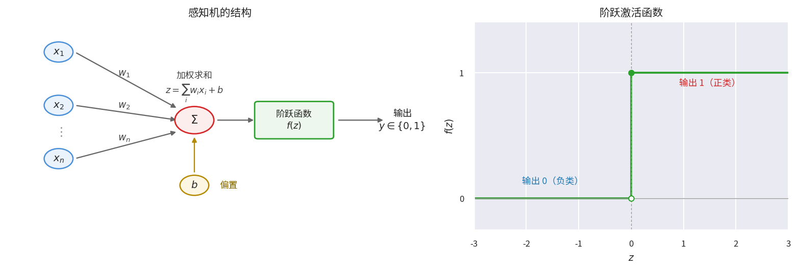
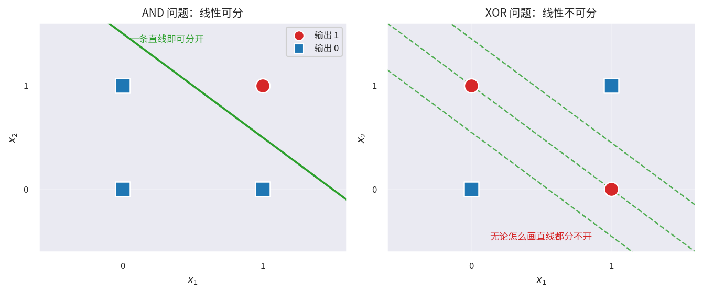
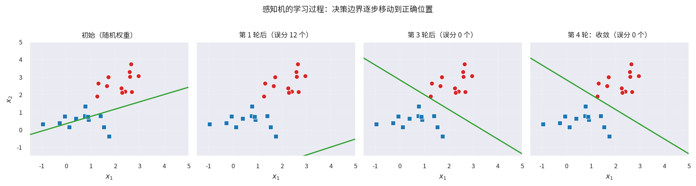
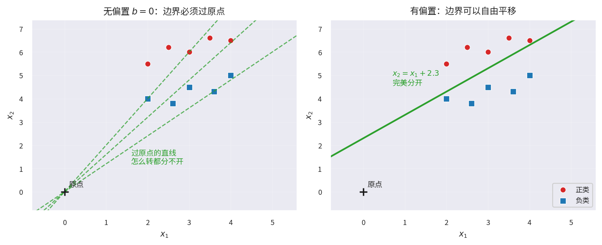
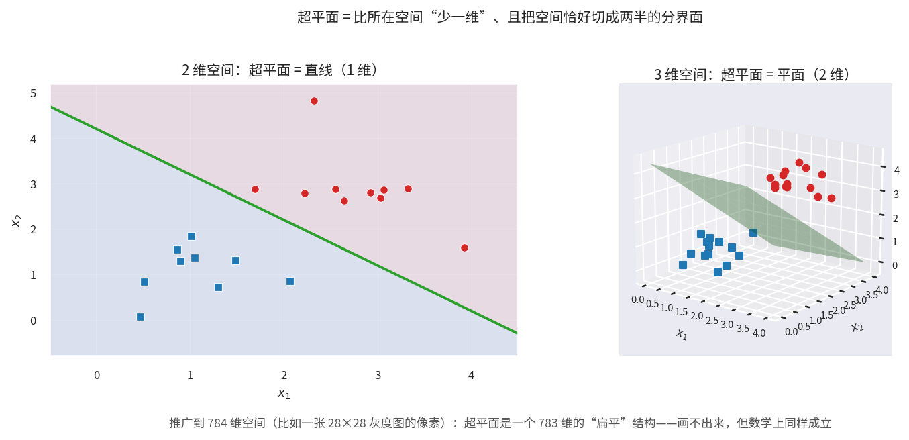
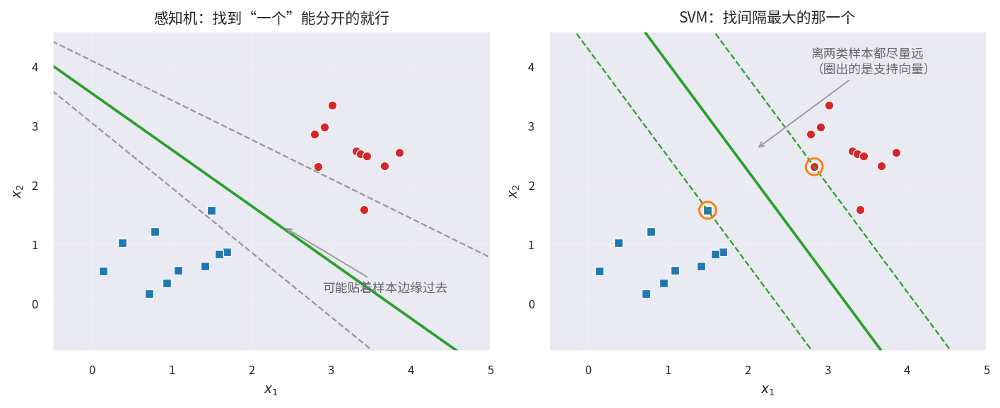
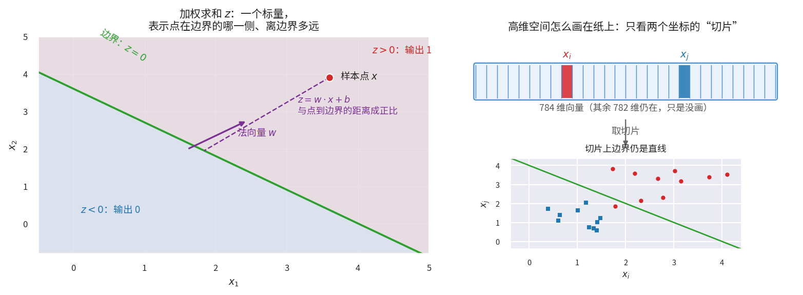
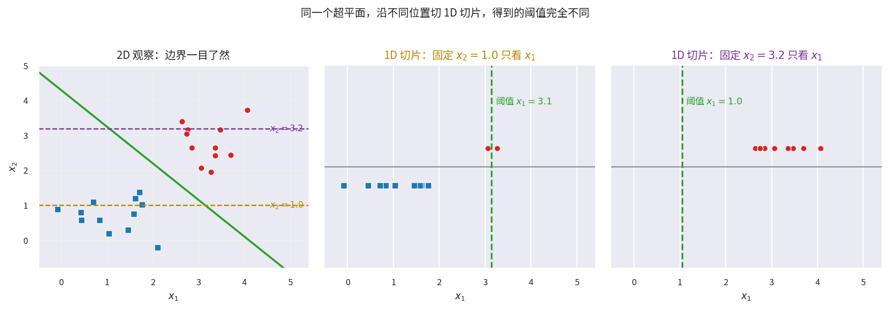

聊聊感知机
2026年09月02日 星期三最近在入门机器学习，从感知机学起。本来以为这个 1958 年的老模型结构那么简单，半小时就能翻篇，结果真看进去，卡住我的地方一个接一个：偏置到底为什么必须存在、超平面在二维以外长什么样、"训练就是找分割线"这个说法对不对、高维空间的数据凭什么能画在二维图上。最后干脆用 C++ 把它实现了一遍，还拿到真实数据上跑了跑。
这篇就是这个学习过程的整理。昨天那篇《加权求和式子的各种写法》其实也是这次研究过程中的一个小分支，单独摘出去了。
先摆一条时间线
感知机在神经网络的历史里是什么位置？列一下就清楚了：
| 年份 | 事件 |
|---|---|
| 1958 | Frank Rosenblatt 提出感知机（Perceptron），最简单的单层全连接网络 |
| 1986 | Rumelhart 等人推广反向传播，多层全连接网络（MLP）开始实用 |
| 1989 | Yann LeCun 等人把卷积神经网络用于手写数字识别（LeNet 雏形） |
| 1998 | LeNet-5 正式发表，第一个广为人知的 CNN 架构 |
全连接网络比 CNN 早了大约 30 年。CNN 的出现，是为了解决全连接网络处理图像时的两个毛病：参数太多、忽略像素之间的空间结构。而这个可以追溯到 1958 年的感知机，就是下面要聊的主角。
感知机是什么
结构：加权求和 + 阶跃函数
感知机本质上是一个二元线性分类器，结构简单到一句话能说完：输入加权求和、加个偏置、过一遍阶跃函数，输出 0 或 1。

数学表达式：
几何意义：一条分割线
感知机的决策规则是 \(\sum_i w_i x_i + b > 0\)。在二维平面上，等号成立的所有点构成一条直线，把平面分成两半：一侧输出 1，另一侧输出 0。
用 AND 和 XOR 两个经典问题对比最直观：

- AND 问题：四个点可以被一条直线完美分开，感知机学得会；
- XOR 问题：无论怎么画直线都分不开。这就是感知机的致命局限——它只能解决线性可分问题。
学习规则：错误驱动
感知机的学习方式也很朴素：预测错了就调整权重，让决策边界往减少错误的方向移动。
其中 \(\eta\) 是学习率（比如 0.1），\(y\) 是真实标签，\(\hat{y}\) 是预测值。直观理解：
- 真实是 1 却预测成 0：误差 \(y-\hat{y}=+1\)，权重增大，让 \(\sum w_i x_i\) 变大；
- 真实是 0 却预测成 1：误差为 \(-1\)，权重减小；
- 预测对了：不更新。

上图是一次真实的模拟：从随机权重开始，每一轮把误分的样本挨个拿出来修，决策边界一步步挪过去，第 4 轮全部分类正确，收敛。
这背后有个著名的感知机收敛定理（Rosenblatt 自己证的）：只要数据线性可分，这个算法保证在有限步内收敛。反过来，数据线性不可分时，它会永远震荡下去——XOR 就是这种情况。这个"震荡"不是理论上的吓唬人，本文最后的实测会亲眼看到它。
偏置到底为什么必须存在
这是我第一个真正卡住的地方。\(b\) 看起来像个无关紧要的常数，但它的数学本质是：给决策边界一个"平移自由度"。

可以从三个层面理解：
几何层面：没有偏置，边界必须过原点。 决策边界是满足 \(\sum_i w_i x_i + b = 0\) 的所有点。如果强制 \(b=0\)，方程变成 \(w \cdot x = 0\)，原点 \(x=0\) 天然满足——边界被钉死在原点上，只剩"旋转"这一个自由度。上图左半就是这种困境：那组数据明明一条斜线就能分开，但所有过原点的直线都做不到。
代数层面：\(b\) 就是直线方程的常数项。 二维直线的标准写法是 \(ax + by + c = 0\)，\(c\) 决定位置，\(a\)、\(b\) 决定方向。\(w\) 管方向、\(b\) 管位置，缺一不可。少了 \(b\)，表达能力直接腰斩。
统一视角：\(b\) 是对"恒为 1 的虚拟输入"的权重。 这是个很优雅的理解：把输入向量增广一个维度，
那么 \(\tilde{w} \cdot \tilde{x} = \sum_i w_i x_i + b\)，感知机又变回了"纯加权求和"的形式，偏置不需要特殊处理。很多神经网络框架内部就是这么实现的，文末的 C++ 代码里也用了这个技巧。
还可以打个直观的比方：把感知机想象成录取系统，没有偏置相当于"加权总分必须大于 0 才录取"——这个 0 的门槛写死了。偏置让你能独立调整录取线的高低，而不用动各科权重。
一句话：偏置不是锦上添花，而是线性模型完整表达能力的必要组件。
超平面：不止二维
这里有个概念值得澄清：直线是二维空间的超平面吗？答案是：对，但只是特例。
超平面的定义是：\(n\) 维空间中，维度为 \(n-1\) 的线性子空间。"超"（hyper）不是说它比平面更高级，而是说它比所在空间恰好低一维。

| 空间维度 | 超平面是什么 | 超平面维度 |
|---|---|---|
| 2 维 | 直线 | 1 |
| 3 维 | 平面 | 2 |
| 784 维（28×28 灰度图的像素） | 无法想象的"扁平"结构 | 783 |
不管多少维，超平面都有两个不变的性质：维度比空间少一；把空间恰好切成两个半空间。感知机的决策边界在任何维度下都满足这两条，所以它永远是一个超平面——二维时你看得见它是条线，784 维时它存在但画不出来。
训练就是找超平面，但找到的不一定是最好的
到这里可以总结一句：感知机的训练就是在找那个分割超平面。这话大方向对，但要加两个限定。
第一，感知机不是解析地"算出"超平面，而是迭代试错逼近：每次更新 \(w \leftarrow w + \eta(y-\hat{y})x\)，几何上等价于旋转和平移边界，让它朝减少错误的方向挪。
第二，也是更关键的：收敛定理只保证找到"某一个"能完美分类的超平面，不保证是"最好的"。它可能刚好擦着样本边缘过去，对噪声非常敏感。

这正是感知机和 SVM 的分水岭：
| 感知机 | SVM | |
|---|---|---|
| 目标 | 找到一个能分开的就行 | 找间隔最大的那个 |
| 解的性质 | 可行解，不唯一 | 最优解，唯一 |
| 对新样本 | 可能贴着旧样本边缘，容易翻车 | 离两类都尽量远，更稳 |
所以后来 SVM 解决"找最优超平面"的问题，多层神经网络解决"数据不是线性可分"的问题——感知机的两个短板，各自催生了一条技术路线。
加权求和算出来的到底是什么
这是我第二个真正卡住的地方：看感知机的示意图时，总觉得是把高维的值"映射"到了二维平面上，但说不清其中的数学含义。拆开其实是两个问题。
问题一：\(z = \sum_i w_i x_i + b\) 的结果是什么？ 是一个标量，但这个标量的几何意义很丰富——它是"有符号距离"的缩放版本：
- \(z > 0\)：点在边界的正侧（\(w\) 指向的一侧），输出 1；
- \(z < 0\)：负侧，输出 0；
- \(|z|\) 的大小与点到边界的垂直距离成正比（精确地说，距离 \(= |z| / \|w\|\)）。
换个等价的说法：\(z\) 是向量 \(x\) 在法向量 \(w\) 方向上的投影长度（乘以 \(\|w\|\) 再加 \(b\)）。

问题二：784 维的数据凭什么画在二维图上？ 答案是：我们并没有"映射"，只是切片。
打个比方：给一个立方体拍正面照，照片是二维的，但立方体还是三维的，你只是看不见深度轴。图片数据同理——一张 28×28 的灰度图，把像素拉平了就是一个 784 维向量；二维散点图只显示其中 \(x_i\)、\(x_j\) 两个坐标，其余 782 维仍然存在，只是没画。
而且这种切片图不是近似的比喻，是精确的数学事实：固定其他 782 个变量后，\(w_i x_i + w_j x_j + (\text{常数}) = 0\) 在 \((x_i, x_j)\) 平面上就是一条直线。783 维超平面与二维坐标平面的交线，必然是直线。
顺带一提，\(\sum_i w_i x_i\) 这个式子本身还有很多等价写法（点积、矩阵乘法、爱因斯坦求和约定……），我单独整理在了上一篇里，这里不重复了。
能不能只用一维来观察
顺着切片的思路再进一步：既然 2D 只是切片，那能不能用 1D 来观察分割？答案是可以，但 1D 观察会丢信息，甚至产生误导。
把边界方程 \(w_1 x_1 + w_2 x_2 + b = 0\) 里的 \(x_2\) 固定住，解出来就是一个 1D 阈值点：
问题在于：这个阈值依赖你藏起来的那个维度。

上图左边是完整的 2D 视图，中间和右边是沿 \(x_2 = 1.0\) 和 \(x_2 = 3.2\) 切出来的两条 1D 数轴——同一个超平面，切出来的阈值一个在 3.1、一个在 1.0，完全不同。而且中间那张图里，两个红点和蓝方块的投影挤在阈值附近，在 1D 上你根本判断不了它们的真实空间关系。
打比方说：1D 观察像透过门缝看房间，2D 观察像透过窗户看——窗户仍是投影，但至少能看清两个维度如何共同决定分类。
当然 1D 也不是没用：分析单个特征的贡献、理解决策树（决策树本质上就是一串 1D 阈值分割）、向非技术人员解释"这个指标超过某值就判正类"，这些场景下 1D 阈值反而是最直观的。只是要心里清楚：那只是高维超平面在你选定的切片方向上的一个"影子"。
动手实现：C++ 写一个感知机
理论说完了，不如动手写一遍。感知机简单到核心代码 30 行就够了（C++17，零依赖）：
// 单层感知机：ŷ = step(w·x + b)
struct Perceptron {
std::vector<double> w;
double b = 0.0;
double lr = 0.1; // 学习率 η
explicit Perceptron(size_t n) : w(n, 0.0) {}
int predict(const std::vector<double>& x) const {
double z = b;
for (size_t i = 0; i < x.size(); ++i) z += w[i] * x[i];
return z > 0 ? 1 : 0;
}
// 错误驱动：预测错了才更新 w ← w + η(y-ŷ)x
void update(const std::vector<double>& x, int y) {
int d = y - predict(x);
if (d == 0) return;
for (size_t i = 0; i < w.size(); ++i) w[i] += lr * d * x[i];
b += lr * d;
}
};
predict 就是前文的 \(\hat{y} = f(\sum_i w_i x_i + b)\)，update 就是学习规则 \(w \leftarrow w + \eta(y-\hat{y})x\)，逐行对应，没有别的东西了。
先跑 AND：6 轮收敛
拿 AND 问题的 4 个样本喂给它，输出：
AND: epoch 6 收敛, w=(0.20, 0.10), b=-0.20
(0, 0) -> 0 (期望 0)
(0, 1) -> 0 (期望 0)
(1, 0) -> 0 (期望 0)
(1, 1) -> 1 (期望 1)
第 6 轮收敛，学到的边界是 \(0.2x_1 + 0.1x_2 - 0.2 = 0\)，即 \(2x_1 + x_2 = 2\)——正好把 \((1,1)\) 和其他三个点分开。和收敛定理说的一样：线性可分，有限步内搞定。
再上真实数据：亲眼看到"震荡"
再拿它跑一个真实任务：一个经典的手写数字图片数据集，60,000 张训练图 + 10,000 张测试图，每张 28×28 灰度、共 10 类。文件格式很简单——4 字节大端魔数 + 维度信息 + 原始像素字节，十几行代码就能解析。数据可以从官方镜像下载：storage.googleapis.com/cvdf-datasets/mnist。
感知机是二分类器，做 10 分类的标准做法是one-vs-rest：训练 10 个感知机，第 \(k\) 个只负责回答"是不是数字 \(k\)"；预测时取加权和 \(z\) 最大的那个。像素归一化到 \([0,1]\)，输入末尾增广一维常数 1，把偏置并进权重——就是偏置那节说的技巧。实测输出（学习率 0.1，逐样本更新，10 轮）：
epoch 1: 测试集准确率 85.95%
epoch 2: 测试集准确率 85.88%
epoch 3: 测试集准确率 86.05%
epoch 4: 测试集准确率 87.42%
epoch 5: 测试集准确率 84.95%
epoch 6: 测试集准确率 85.07%
epoch 7: 测试集准确率 89.03%
epoch 8: 测试集准确率 87.95%
epoch 9: 测试集准确率 88.52%
epoch 10: 测试集准确率 87.52%
注意这个曲线的形状：它不稳定上升，也不收敛，就在 85%~89% 之间来回晃——第 4 轮 87.42%，第 5 轮反而掉到 84.95%。这正是收敛定理的另一面：手写数字的像素空间不是线性可分的，不存在零误分的超平面，感知机只能永远修修补补。理论预言的震荡，实测真的看到了。
对照组：加两层隐藏层值多少钱
我之前从零写过一个三层全连接网络（784→256→128→10，ReLU + Softmax + 交叉熵 + 反向传播）跑同一份数据，实测测试集准确率 97.35%，而且准确率随训练稳定上升。摆在一起看：
| 单层感知机 ×10 | 三层全连接网络 | |
|---|---|---|
| 结构 | 784 → 10（纯线性） | 784 → 256 → 128 → 10 |
| 决策边界 | 10 个超平面 | 分片线性的"折面" |
| 测试集准确率 | 85%~89%，震荡不收敛 | 97.35%，稳定收敛 |
| 训练方式 | 错误驱动的更新规则 | 反向传播 + SGD |
这中间约 10 个点的差距，就是那两层隐藏层买来的东西：把"只能画直线"升级成"能折出曲面"。完整的 IDX 解析和数据加载代码就不贴了（读魔数、读维度、逐字节归一化，都是体力活），核心逻辑全在上面那 30 行里。
最后
一圈研究下来，感知机这个 1958 年的老模型比我想象的耐嚼：
- 结构极简：加权求和 + 偏置 + 阶跃函数，30 行 C++ 就能实现；
- 几何本质：线性分类器，决策边界是超平面；
- 学习方式：错误驱动的迭代，线性可分必收敛；
- 两个短板：只保证"可行"不保证"最优"，线性不可分直接无解——实测中准确率震荡不收敛，就是这个短板的实锤；
- 历史地位：它的失败直接催生了多层神经网络和 SVM。
没有感知机的失败，可能就没有后来的深度学习——这话不算夸张。而我自己的收获是，学这类模型时，把每个符号都追问到几何意义上（偏置是什么、标量 \(z\) 是什么、图是怎么画出来的），再动手把代码写出来跑一遍，比背公式有用得多。
这篇是学习笔记性质的整理，我自己的理解未必都对，有说错的地方欢迎指教。
参考资料
- F. Rosenblatt, The Perceptron: A Probabilistic Model for Information Storage and Organization in the Brain, 1958
- M. Minsky & S. Papert, Perceptrons: An Introduction to Computational Geometry, 1969
- 李航《统计学习方法》第 2 章：感知机
- 周志华《机器学习》第 5 章：神经网络
- 手写数字数据集（IDX 格式）：storage.googleapis.com/cvdf-datasets/mnist